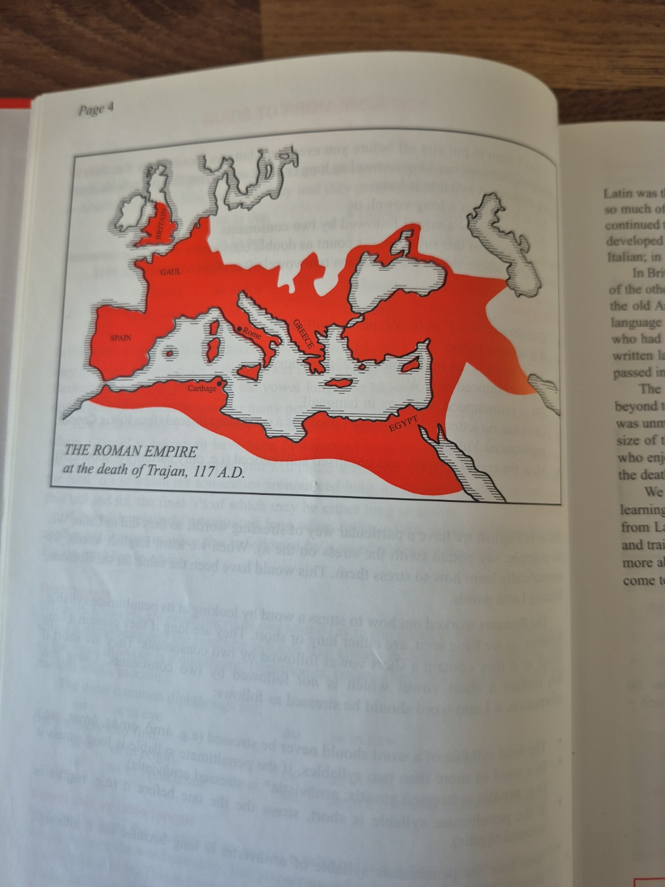
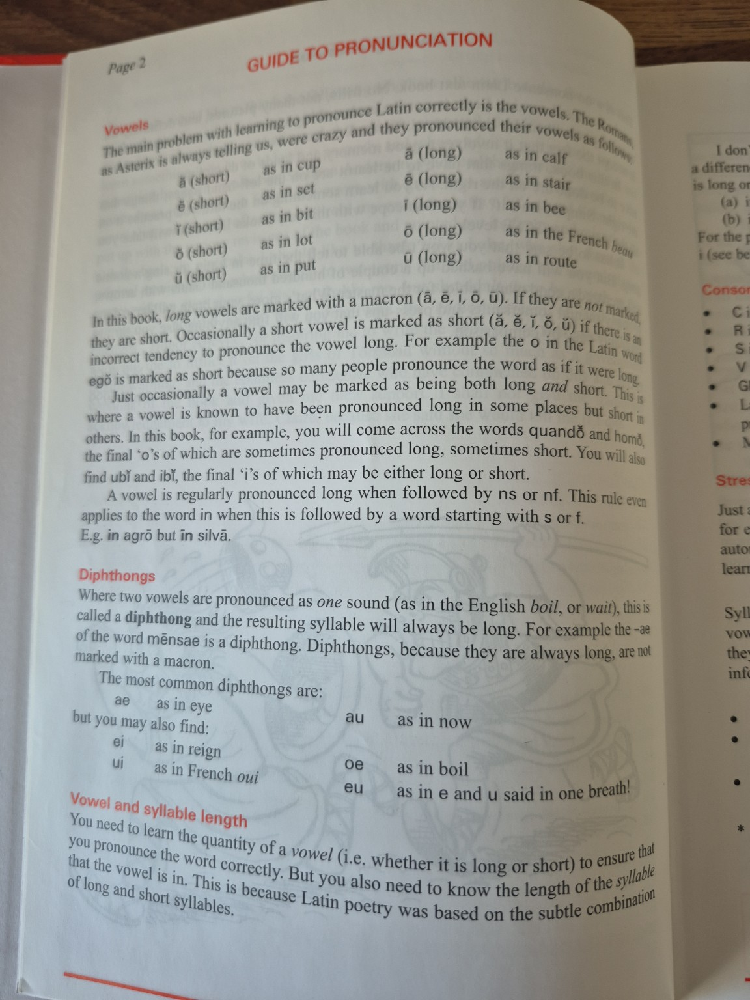
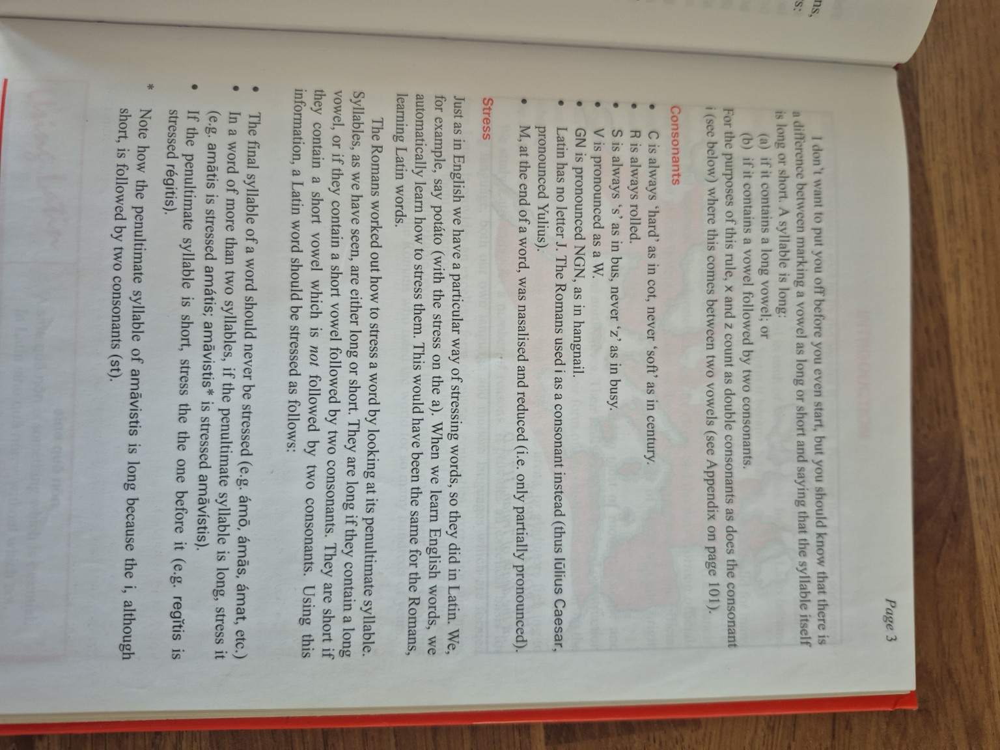
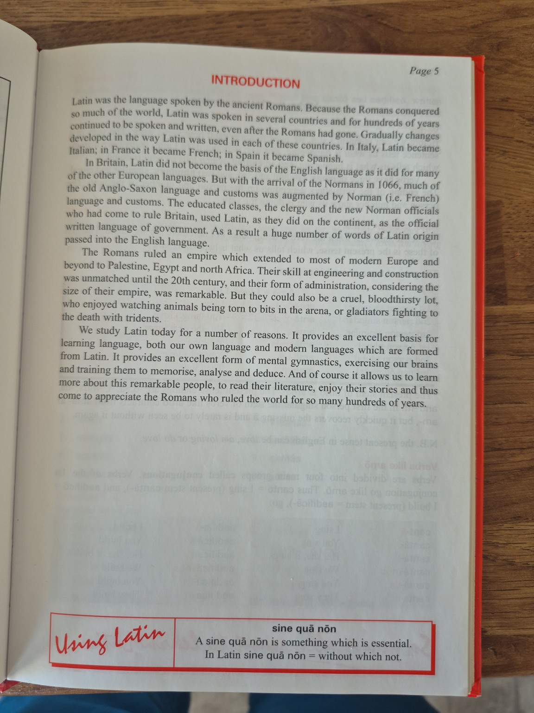

LECTIŌ PRĪMA · FIRST LESSON
Salvē! Welcome to Latin.
Latin began as the language of Rome and spread across a vast empire. It shaped the Romance languages and contributed thousands of words to English, particularly through education, law, government, science and the Church.
Think precisely
Latin develops careful reading, pattern recognition and logical analysis.
Understand languages
Its vocabulary and grammar illuminate English and modern European languages.
Enter the Roman world
Read the words behind Roman history, literature, mythology and inscriptions.
An essential condition: literally, “without which, not”.
EXPLORE HISTORY
The Roman world
At its greatest extent, the Roman Empire linked Britain, continental Europe, North Africa and the eastern Mediterranean. Select a location to reveal a short historical note.
The Roman Empire near its greatest extent, c. AD 117
View the photographed source map

This photograph is retained as a private archival reference. The activity above uses an original simplified presentation.
SPEAK WITH CONFIDENCE
Vowel quantity
Select a sound card to hear a synthetic Latin model. These clips are suitable for early practice but should later be reviewed against a chosen Classical Latin pronunciation standard.
Classical Latin distinguishes short and long vowels. A long vowel is commonly marked with a macron. Hold a long vowel for roughly twice as long as its short partner.
A macron marks length, not stress. The symbols a and ā may occur in differently stressed syllables.
TWO VOWELS, ONE SYLLABLE
Diphthongs
A diphthong combines two written vowels into one flowing sound. Its syllable is naturally long.
CLEAR, CONSISTENT SOUNDS
Important consonants
In restored Classical Latin, several consonants are more consistent than their English equivalents. The letters c and g remain hard, consonantal v is pronounced like English w, and r is tapped or trilled rather than pronounced as a modern English r.
Always hard
Use the sound in cat, never the soft sound in city.
Always hard
Use the sound in go, never the soft sound in gem.
Like English W
Consonantal v is pronounced like the opening sound in we.
Tap or trill
Use a light tongue tap or a short trill, similar to Italian or Spanish.
Normally voiceless, like the s in see.
Pronounce both elements, approximately ng-n.
Often weakened or partly nasalised in reconstructed Classical pronunciation.
HOLD THE MIDDLE
Double consonants
A written double consonant is pronounced for longer than a single consonant. Do not treat nn, ll, tt or other pairs as merely decorative spelling.
ānus
an old woman
annus
a year
mala
bad things
stella
a star
Imagine a tiny hold inside the consonant: an-nus and stel-la.
FIND THE BEAT
Word stress
Two syllables
Stress the first syllable: RŌ-ma.
Three or more syllables
Stress the penultimate syllable when it is long; otherwise stress the syllable before it.
TRY THE PATTERN
Select the word to reveal its stressed syllable.
PUT IT TOGETHER
Reading practice
Read each sentence aloud before playing the model. Pay attention to vowel length, hard c and g, consonantal v, trilled r and doubled consonants.
Rōma in Italiā est.
Rome is in Italy.
Caesar in Galliā pugnat.
Caesar fights in Gaul.
Via longa est.
The road is long.
Stella clāra est.
The star is bright.
SELF-CHECK
KNOWLEDGE CHECK
Foundations quiz
Select any pronunciation control.
NEXT LESSON
Consonants and reading aloud
Continue building a reliable Classical Latin pronunciation system.
View all photographed source pages


